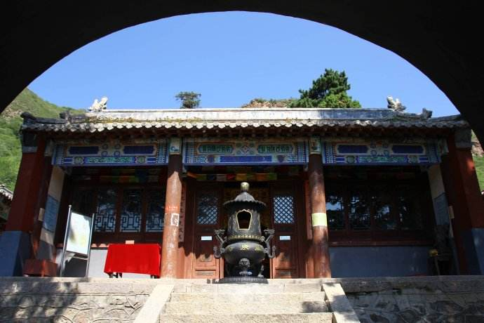
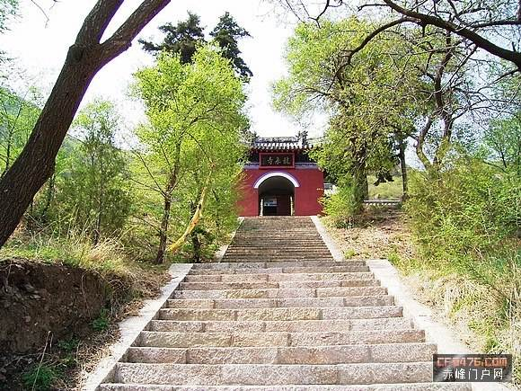

锦山龙泉寺位于内蒙古自治区喀喇沁旗锦山北2公里。山谷清泉终年不枯。元初建寺，元至元二十四年（1287年）、至正元年（1341年）及清代、民国年间屡经维修。依山建寺，三进院落，山门内中轴线两侧有东、西配殿，寺后部为主殿，重檐歇山式，有回廊。主殿阶下有一巨型卧狮。寺院内存有元碑、四至碑、民国碑各一通，对研究宗教文化有重要价值
龙泉寺始建于元代延祐四年（1317年）。寺庙布局以山势三进三阶形式而建，总占地面积5000平方米。山门居前院墙正中，近方型，高六米，五脊顶，四檐角翘起。娱乐项目现在主要有：赛马、射箭、滑翔、滑沙、快艇、皮划艇、游泳、垂钓、水上游戏、奇石观赏、沙漠驼队探险等。东西配殿前各立高3.2米螭首龟跌石碑一座，东为至正元年（1341年）所立“松州狮子崖龙泉寺住持慈光普济大师然公道行碑”，碑文清晰，记叙“延祐四年安西咸宁张智然大师见此地”‘山明水秀，境物幽深，似于尘世相隔’，于是‘去除瓦砾，剪剔荆榛。不数年间，山门佛殿，克日落成。厨库云堂，方丈僧舍，轮焕一新，莫不丹青斗彩，金碧争辉，灿然眩目’”。西为中华民国六年（1917年）所立喀喇沁右翼亲王，旗主再次重修的“龙泉寺记”碑。寺院中央有古松、古柏数棵。大殿位于最后，面阔三大间，四周有围廊，单檐歇山五脊顶，殿台在有石刻勾栏。殿前立有香龛。寺后东侧山坡上有石窟一处，高阔各2米，深1.5米，内有石佛2尊。[1]
清康熙三十七年（1698年），康熙皇帝奉皇太后之命赴盛京（沈阳）拜谒祖陵，途经喀喇沁旗，游龙泉寺后，龙心大悦，赠金马鞍为镇寺之宝，并赋诗赞龙泉寺曰：“古木苍山路不穷，霜林飒沓响秋风，临流驻跸归营晚，坐看旌旗落日红”